PLACES TO VISIT IN LEH-LADAKH

15 Best Places to Visit in Ladakh for Lifetime Experience
Ladakh is a perfect amalgamation of adventure activities and leisure vacations. It is a land of high passes that boasts about alpine lakes, ancient monasteries, breathtaking landscape, and glistening streams. There are a plethora of best places to visit in Ladakh, which are an absolute delight for nature lovers, thrill-seekers, and shutterbugs. From bike trips and trekking to camping and mountaineering, Ladakh has so much to offer to tourists. The Buddhist monasteries nestled in the lap of the mighty Himalayas for thousands of years and an important cultural center where religious festivals organize and offer glimpses of the rich past of the region. There are a number of adrenaline-rushing activities offered here, which make the Ladakh trip memorable.
Pangong Lake
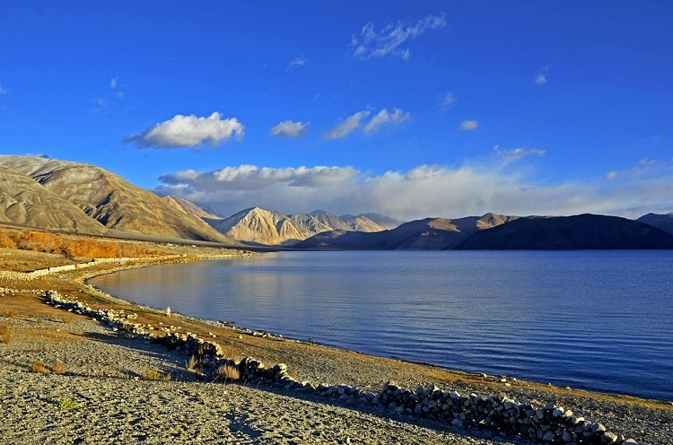Nestled at an elevation of 4,225 m above sea level, Pangong Tso Lake is situated on the India-China border. This pristine and endorheic lake is 134 km long, which extends from India to China. The prime attraction of the lake is its changing color over the duration of the day and this crystal blue lake offers glimpses of the mighty surrounding peaks in the lake, which is a unique experience. It is home to some of the exotic migratory species of birds, which you can spot on the bank of the Pangong Tso. Owing to the harsh winters, the lake freezes down during this time. Camping on the bank of the lake is a sheer delight for adventure enthusiasts.
Thiksey Monastry
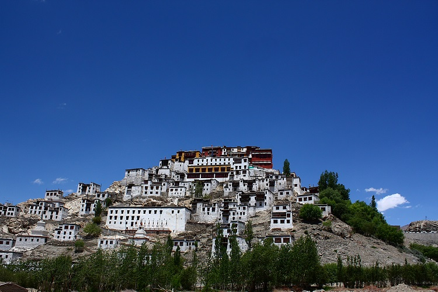Renowned for its resemblance with the Potala Palace in Tibet, Thiksey Monastery is among the most revered sites in Ladakh among Buddhists. The monastic complex was built in the 15th century by Palden Zangpo. It is the largest gompa in central Ladakh and the major attraction of Thiksey Monastery is Maitreya Temple, which was built in 1970 to commemorate the visit of the Dalai Lama in the 14th century. The monastery houses the 15 m tall Maitreya Buddha statue in the monastery, which is the largest statue in Ladakh covering two stories of the building. Gustor Festival is the major event organized here, which offers glimpses of the rich cultural heritage of the region.
A confluence of indus and Zanskar rivers
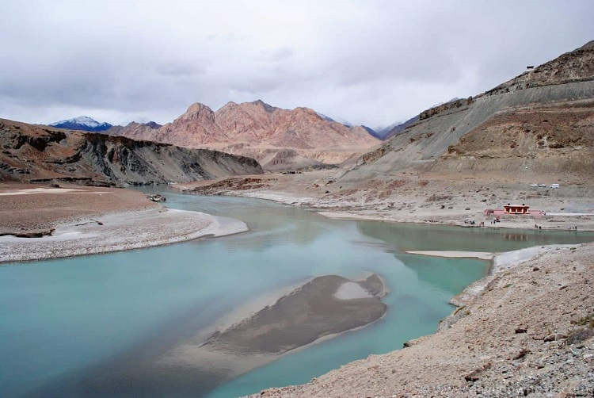Popularly known as Sangam in the Leh region, the confluence of the Indus and Zanskar Rivers is a famous tourist attraction in Leh. Amidst the barren mountains, two of the major rivers of Ladakh merge at a place and offer heavenly views. Nimmu Valley is a place where these two water bodies meet. These two rivers can be easily distinguished owing to their different colors. The shiny blue Zanskar river that has its source in Zanskar Valley merges with the green-tinged Indus that originates from the Indus Valley near the Mansarovar range in the mighty Himalayas. From March to May, the colors of these rivers can be best witnessed.
Hall of Fame
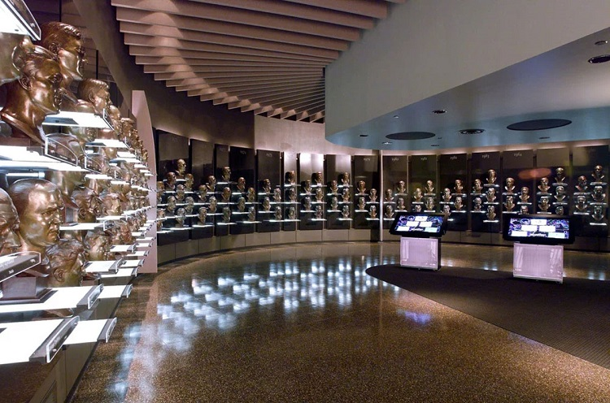Constructed by the Indian Army to commemorate the brave Indian martyr soldiers, the Hall of Fame Museum is located in Leh. It stands as a reminder of the great sacrifice of the brave soldiers who laid down their lives to save their country. There are two stories in the museum, which are divided into several sections. On the Upper Floor, there is a gallery named OP Vijay Gallery that comprises the arms and ammunition captured and used during Kargil War. You can see the pictures of the training processes, accommodations, and army posts on the faraway glaciers. On another floor, you can see the pictures of the Kargil War. You can watch the documentary of Operation Vijay on the ground floor and witness the exemplary courage of Indian soldiers during the war.
Gurdwara Pathar Sahib
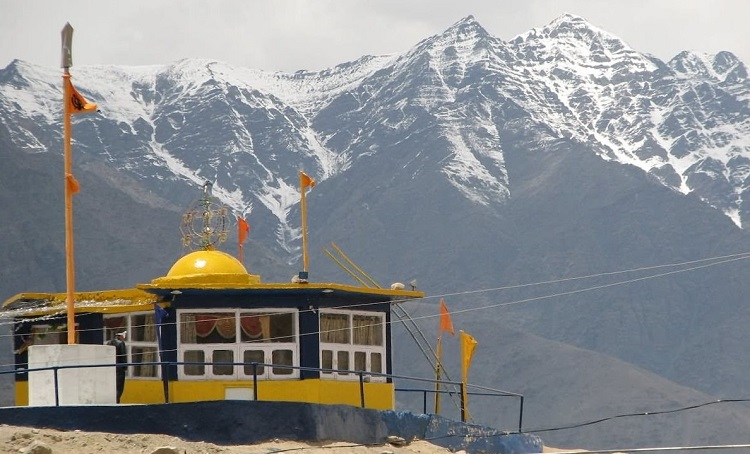Gurudwara Pathar Sahib is located in the lap of the mighty Himalayas in Ladakh. It is dedicated to Guru Nanak Dev Ji, the founder of Sikhism. Ladakh is predominantly a Buddhist region but this Gurdwara is one of the revered sites among all faiths in the region. According to the legends, Guru Nanak Dev Ji was attacked by the demons during his visit and threw a large boulder on him while he was meditating at the base of a hill. As per the demon’s surprise, the rock became soft like molten wax and failed to cause any harm to the Sikh Guru and he realized that Guru Nanak Dev is a divine person. After which, the demon stopped harassing him along with the people of the town.
Shanti Stupa
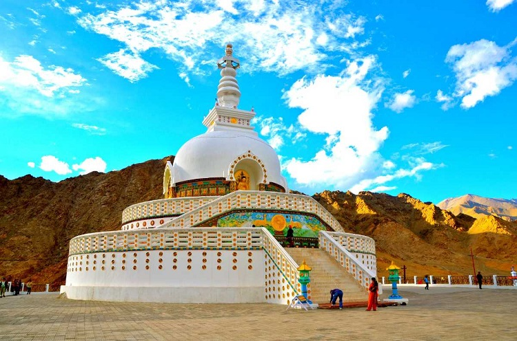Perched atop a steep hilltop, Shanti Stupa is a stunning white-domed Buddhist monument. It is one of the most religious sites for Buddhists that holds the relics of Buddha that was consecrated by the 14th Dalai Lama. From the Shanti Stupa complex, you can enjoy the bird’s eye view of Leh city and soak in the tranquil aura of the surroundings. It is the perfect tourist place in Ladakh for peace-seekers and shutterbugs. Nestled in the Changspa Village, Shanti Stupa was constructed in 1991 by Japanese Buddhist, Bhikshu Gyomyo Nakamura. It was built to mark the completion of 2500 years of Buddhism and to promote world peace. It is a part of the peace pagoda mission, which aims to spread harmony through the preaching of Buddha.
Hemis National Park
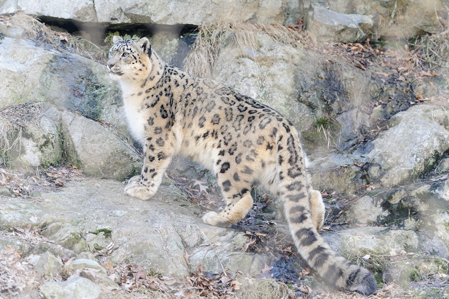Home to some of the rare and endangered species of wildlife, Hemis National Park is located in the eastern region of Ladakh. Spread over 4,400 m sq. km, this is one of the largest national parks in South Asia. It is the largest contiguous protected region after Nanda Devi Biosphere Reserve. Several gompas and villages are a part of the Hemis National Park. This is a protected home to some endangered species including leopard, Asiatic ibex, Tibetan wolf, the Eurasian brown bear, and the red fox. It is famous for Snow Leopard treks during which you can spot Snow Leopard along with other wildlife species. This is among the famous places to visit in Ladakh for adventure enthusiasts. Camping and trekking are popular activities here.
Khardungla Pass
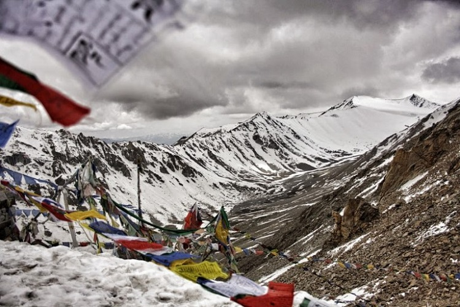One of the highest motorable roads in the world, Khardung La Pass is perched at an altitude of 5,349 m above sea level. This high-altitude mountain pass connects Leh from the Shyok and Nubra Valleys. Traversing through the highest passes in the world is a unique experience and this excitement is beyond any description. You can enjoy a spectacular view of the snow-capped Himalayas from the top of the pass, which can make the Ladakh trip memorable. It is one of the top places to visit in Ladakh with family and friends. The bike trip to Khardung La Pass is a thrilling experience, which you can enjoy with your loved ones.
Nubra Valley
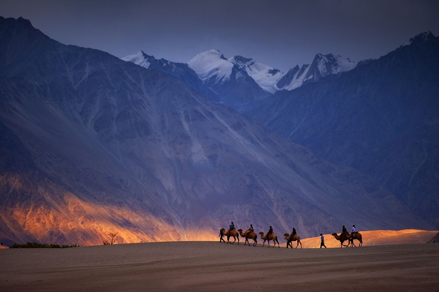Popular for its unique landscape and jaw-dropping locales, Nubra Valley is among the top attractions in Ladakh. It is connected with the Leh by Khardung La Pass and offers innumerable experiences. Nubra Valley is known for its cold desert and Bactrian double-humped camels. You can enjoy a camel ride amidst the barren mountains in the sand dunes of the valley. With the backdrop of Diskit Monastery, the camel ride offers an amazing experience. During the sunset, the surroundings look mesmerizing and offer a memorable experience during the Ladakh trip. There are numerous eco-friendly camps, where you can enjoy camping. Hunder Village, Diskit Monastery, Turtuk, and Panamik are the major attractions of the Nubra Valley.
Tso Morori Lake
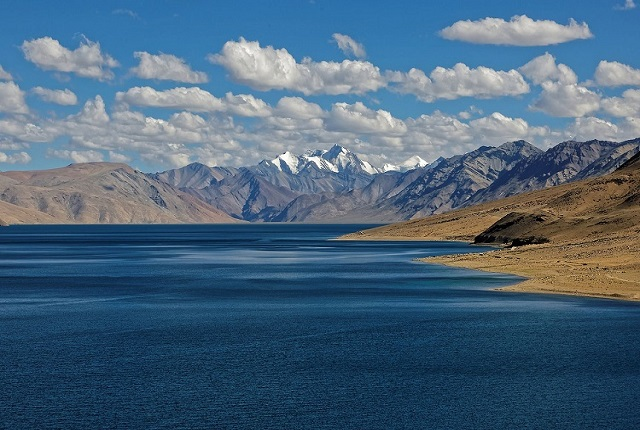Located in one of the most beautiful and scenic regions of Ladakh is the Changthang Plateau region, Tso Moriri Lake is an alpine lake nestled at an altitude of 4,522 m above sea level. This ‘Mountain Lake’ is the highest brackish water lake in India lies in the breathtakingly beautiful Rupshu Valley. Tso Moriri is an emerald blue-colored lake, which attracts a range of migratory birds, marmots, and rarely spotted Tibetan wolves. Being part of the wetland reserve under the Ramsar site, it is actually known as Tso Moriri Wetland Conservation Reserve and no one can pitch a tent or construct anything near the banks of the lake. The snowy peaks of the Changthang Plateau feed the lake and it is one of the sacred lakes among the locals in Ladakh. There are camps near the lake where you can stay and enjoy the trip.
Magnetic Hill
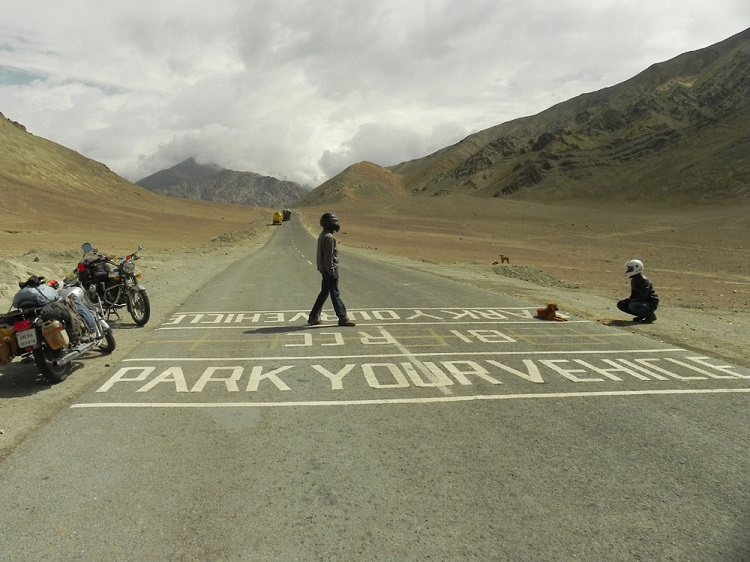Also known as ‘Cyclops Hill’, Magnetic Hill is renowned for the phenomenon that defies the law of gravitation. The hill road is downhill and when you park your vehicle in a box there, it seems like the vehicle rolling uphill in the defiance of gravity. Located on Srinagar Leh Highway, Magnetic Hill is the best place to visit in Ladakh and to get captivated by this phenomenon. However, it is proved that this is an optical illusion and the vehicle rolling downhill but owing to the illusion phenomenon it seems like it is going uphill. This is a must-visit place in Ladakh and has a memorable experience.
Spituk Gampa
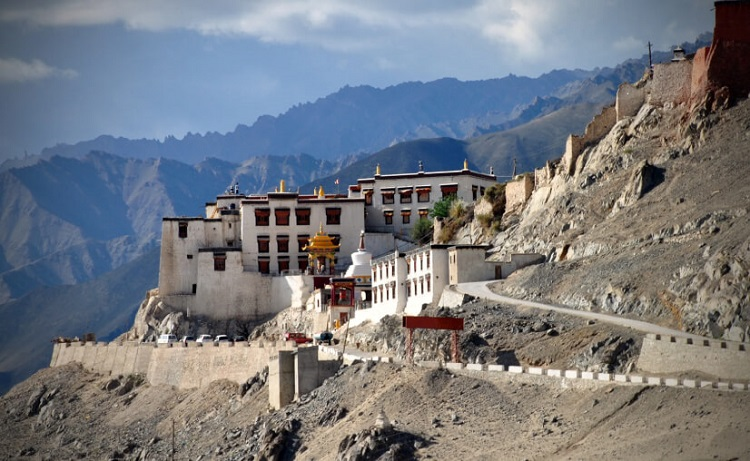Boasts about religious scriptures, frescos, wall painting, and numerous shrines, Spituk Monastery is also known as Pethup Gompa. This is a perfect place to visit for history buffs and peace-seekers. Here you can meditate and spend some time amidst the tranquil aura of the monastery. It is home to 100 monks who live here, meditate, and learn about Buddhism. There is a giant Kali statue in the monastery, which they reveal at the annual celebration of the Gustor Festival when a large number of people visit the monastery to attend the festivities. There is a big throne inside the monastery for the Dalai Lama and there are shrines dedicated to the Vajrabhairava deity. The major attraction of Spituk Monastery is the Cham Dance performed by the Lamas during the Gustor Festival, which is worth watching.
Distik Monastery
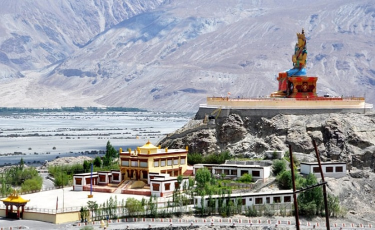Boasts about religious scriptures, frescos, wall painting, and numerous shrines, Spituk Monastery is also known as Pethup Gompa. This is a perfect place to visit for history buffs and peace-seekers. Here you can meditate and spend some time amidst the tranquil aura of the monastery. It is home to 100 monks who live here, meditate, and learn about Buddhism. There is a giant Kali statue in the monastery, which they reveal at the annual celebration of the Gustor Festival when a large number of people visit the monastery to attend the festivities. There is a big throne inside the monastery for the Dalai Lama and there are shrines dedicated to the Vajrabhairava deity. The major attraction of Spituk Monastery is the Cham Dance performed by the Lamas during the Gustor Festival, which is worth watching.
Hemis Monastery
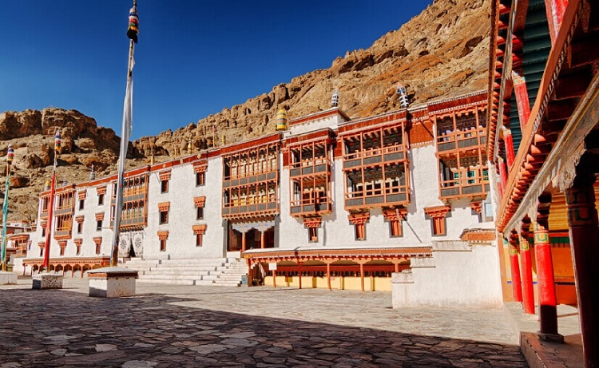Belongs to the Drukpa lineage, Hemis Monasteries is among the largest monastic institutions in Ladakh. It houses the Mahayoga Tantra School where monks learn about Buddhism. The monastery boasts of vast collections of prehistoric artifacts and relics. Some of the popular things housed in the monastery are the statue of Buddha made of copper, stupas made of gold, and silver, thangkas, and murals. From the top of the monastery, you can enjoy a great view of the Chomoling which is home to several nuns, and soak in the scenic vistas of the serene surroundings. Hemis Festival is the major event celebrated here, which is attended by a large number of tourists every year.
Kargil
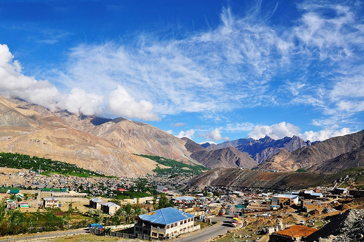One of the two major districts of Ladakh and the joint capital of the region, Kargil is home to numerous lakes, valleys, mountain passes, and villages. Suru Valley, Pensi La, and Drass are the famous places to visit in Kargil. The major attractions of Kargil are Kargil War Memorial, Mulbekh Monastery, Rangdum Monastery, Drang Drung Glacier, and Hundermand Village where a large number of tourists visit. To enjoy the thrill of mountaineering, adventure lovers can go for a trek to Nun Kun massif. Mulberry, apple, and apricot trees enhance the breathtaking beauty of the landscape of Kargil. In 1999, Kargil was the place where the war between India and Pak took place owing to which it is famous and people visit the War Memorial to witness the courage and valor of the Indian Army.